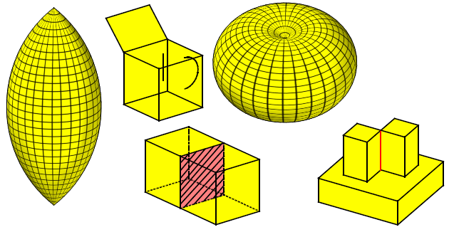

|
Introduction To Basic Concepts In Parasolid |
|
Contents
This volume introduces you to the basic concepts you need to know in order to create, edit and manipulate models using the PK. It explains the components that are used to create models, the different types of body you can create and the accuracy used in Parasolid model space. It also provides an overview of Parasolid’s geometry components and Parasolid’s ability to transmit data.
This volume contains the following chapters:
-
Chapter 14, “Model Structure” describes the major entities that comprise Parasolid models or are used to manage Parasolid sessions
-
Chapter 15, “Body Types” describes the different body types used by Parasolid
-
Chapter 16, “Session And Local Precision” describes the fixed accuracies used in Parasolid for modeling operations
-
Chapter 17, “Geometry” describes the geometry used by Parasolid
-
Chapter 18, “B-Curves And B-Surfaces” describes how B-geometry is used in Parasolid
-
Chapter 19, “Nominal Geometry” describes how edges with local precision can reference a notional accurate curve
-
Chapter 20, “Lattice Geometry” describes the lattice geometry used by Parasolid
-
Chapter 21, “Transformations” describes the homogenous coordinate transformations that are supported by Parasolid
-
Chapter 22, “Assemblies And Instances” describes assemblies and instances and explains their use in transmit file
-
Chapter 24, “Reading and Writing Parasolid Data” describes how to save data from Parasolid’s internal memory to external storage.

Figure 13-1 Body types used by Parasolid
[back to top]